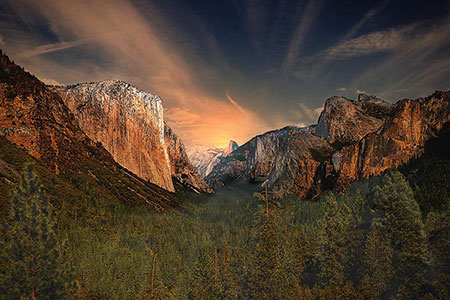
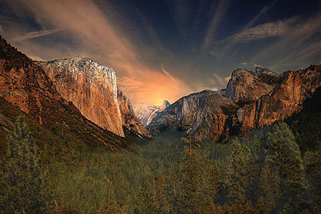
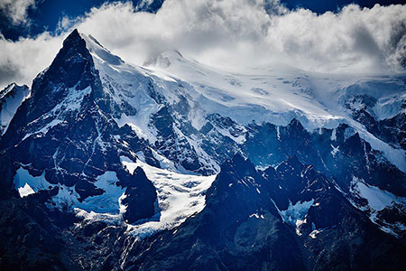
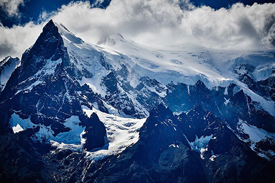

Jmenuji se Adéla, ale všichni mi říkají Áďo. Většinu svého volné času trávím v přírodě. Kdykoliv můžu, vyrazím na hory. Hory miluju, nemůžu se jich nabažit, jsou prostě úžasné.
Dříve jsem pracovala v kanceláři u počítače, ale nedávno jsem se rozhodla, že ze svého koníčka údělám zdroj obživy, a stala jsem se turistickým průvodcem. Splnila jsem si životní sen a organizuji zájezdy do hor po celém světě.
Při svých výletech ráda fotím. Díky fotkám si mohu kdykoliv připomenout všechny úžasná místa, kde jsem byla. Zde je malý výběr těch, na které jsem opravdu pyšná.


 



 



Pracuji jako turistický průvodce pro cestovní kancelář Horalka. Organizujeme zájezdy do hor po celém světě. Většinu zájezdů, které organizuji, také na místě sama provázím. Na horách jsem nejšťastnější a jen v kanceláři bych nevydržela.
Pokud si nevyberete z naší nabídky, mohu vám pomoci s organizací výletu i mimo cestovní kancelář.
| Služba | Cena |
|---|---|
| Plánování výletu | 1500 Kč |
| Zajištění cestovního pojištění | 300 Kč/hod |
| Pomoc s nákupem vybyvení | 700 Kč/hod |
| Průvodce v horách | 2000 Kč/den |

Ráda si povídám. O horách, hudbě, prostě o životě. Ráda zajdu na koncert nebo na cestovatelskou přednášku. Pokud máš podobné zájmy, klidně mi napiš na email nebo se mi ozvi naFacebooku. Stále hledám nové kamarády.
Adéla Maříková
Pouliční 123
Městečko nad Řekou
123 45
IČ: 12345678
E-mail: adela@email.cz
Mobil: +420 987 654 321
© 2018, Adéla Maříková